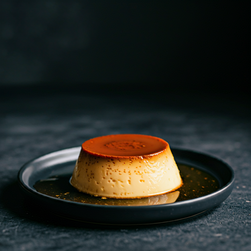

Pudim de Leite condensado, often simply called “pudim,” is a beloved Brazilian dessert that resembles a flan or caramel custard.
Its rich, creamy texture and sweet caramel flavor make it a favorite at family gatherings and celebrations.
Principals Ingredients
1 cup of sugar
1 can of sweetened condensed milk
2 cans of whole milk
3 eggs
1 teaspoon of vanilla extract (opcional)
Principal Way To Do Pudim
Make the Caramel: Melt the sugar in a pan over medium heat until golden. Pour into a bundt pan, coating the bottom and sides. Set aside.
Prepare the Pudim:Blend the condensed milk, whole milk, eggs, and vanilla extract until smooth. Pour into the caramel-coated pan.
Bake: Cover with aluminum foil. Place the pan in a larger baking dish filled with hot water (water bath).
Bake at 180°C (350°F) for about 1 hour and 30 minutes, or until set.
Cool and Unmold: Let it cool completely, then refrigerate for at least 4 hours. To unmold, run a knife around the edges and invert onto a plate.